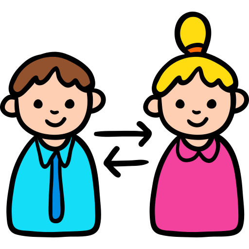

Las Relaciones Públicas son una disciplina científica que estudia la gestión de la comunicación. ¿Cómo?
💗OBJETIVOS
Acompañan el cumplimiento de los objetivos institucionales.

💗RELACIONES
Están para crear, mantener y mejorar las relaciones entre una organización y sus públicos.
